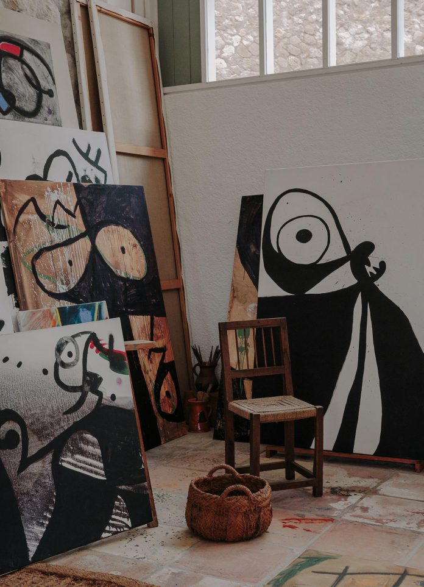
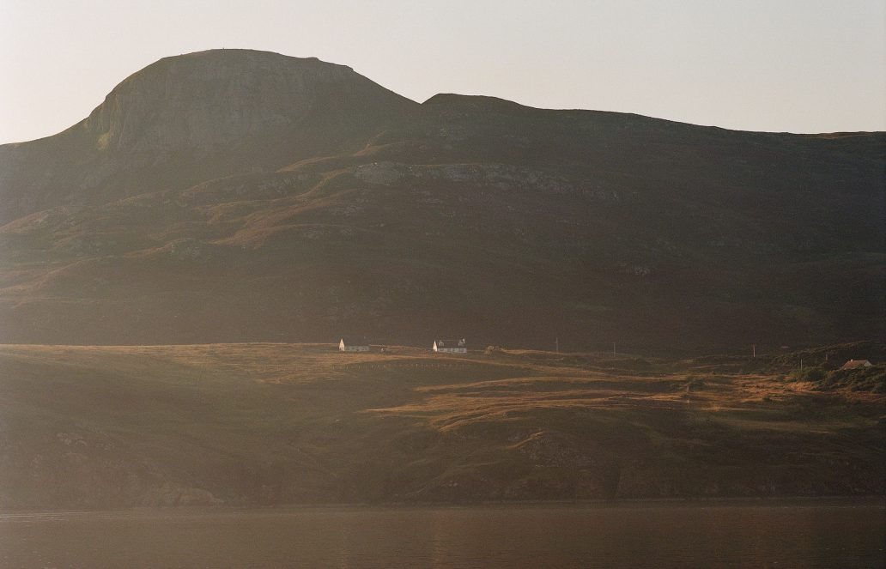
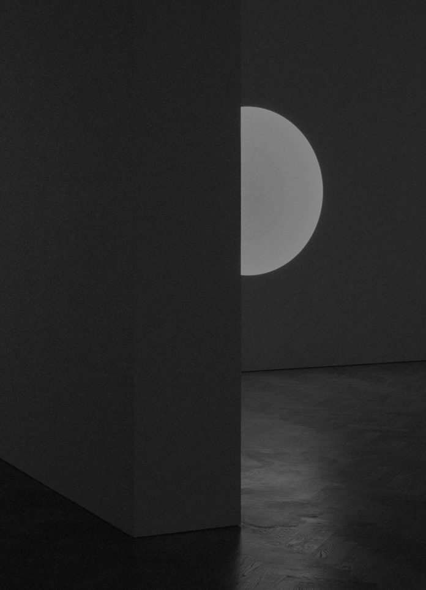
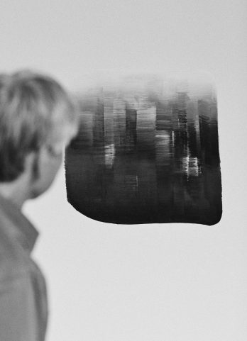

-

Taller Sert
Designed in partnership with his dear friend Josep Lluís Sert, Miró’s Mallorca studio, the Taller Sert, is a work of art in its own right.
-
PLAYLIST
Autumn Playlist 2020
A selection of songs for the autumn season.
-
One Medium to Another
A look at ‘JB Blunk’, a monograph edited by Mariah Nielson, daughter of the artist and director of the JB Blunk Estate.
-

Summer Playlist 2020
A selection of songs for the summer season.
-
PLAYLIST
Capturing Silence
Studying the photography of Koo Bohnchang, via a visit to his studio, on the outskirts of Seoul.
-
Stained Moons
The light-based, patinated art of JAMESPLUMB, and its site-specific application on the Atlantic coast of Northern Ireland.
-

PLAYLIST
Spring Playlist 2020
TA selection of songs for the spring season.
-
The Father of Dansaekhwa
A visit to the studio of Park Seo-Bo, who is considered a founding figure of Dansaekhwa, a loosely grouped Korean art movement developed during the 1970s.
-

Constellation
Three works by James Turrell at Pace Gallery, London.
-
Crystal Bridges
Exploring Crystal Bridges Museum of American Art, Arkansas.
-

UNITED KINGDOM
DESIGN
LONDON
Community Through Craft
A conversation with Studio Pottery London.
-
PLAYLIST
Winter Playlist 2019
A selection of songs for the winter season.
-
UNITED KINGDOM
The Loft Pots
An exhibition by Steve Harrison at Blue Mountain School, London.
-
GALLERY
TRAVEL
SWITZERLAND
Alpine Air
A conversation with Studio Pottery London.
-
GALLERY
Francis at Connolly
A collaborative show at Connolly’s Clifford Street townhouse in Mayfair, London.
-
PLAYLIST
Autumn Playlist 2019
A selection of songs to accompany the autumn season.
-
ARTIST
Fan Ho
A delve into the archives of photographer Fan Ho, whose unique street photography offers a glimpse of life in Hong Kong during the 1950s and 60s.
-
ARTIST
Breaking with Convention
Danish artists Frederik Nystrup-Larsen and Oliver Sundqvist discuss their collaborative process, the role of intuition in their work, and how one determines the value of art.
-

ARTIST
Resonant Space
Visiting Lee Ufan’s Paris studio in the ninth arrondissement.
-
PLAYLIST
Summer Playlist 2019
Our latest selection of songs to audibly accompany the summer season.
-

GALLERY
Modern Archive
Francis Gallery’s inaugural show at its permanent location in Bath, UK, in the ground floor of a restored Grade II listed Georgian townhouse. Featuring works by multidisciplinary artist Romy Northover, studio potter Yoon-Young Hur, and photographer Matthew Johnson.